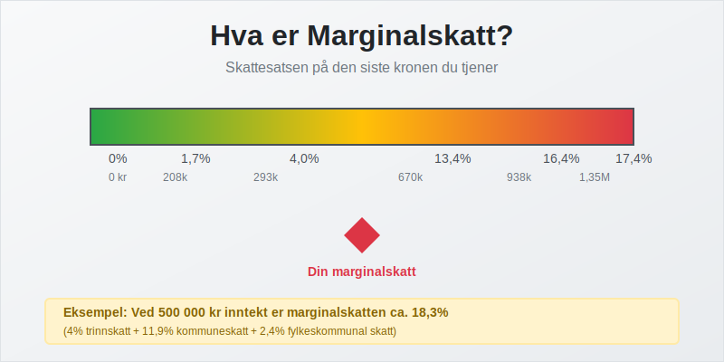
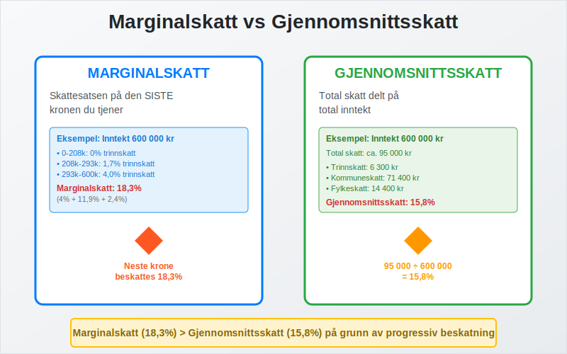
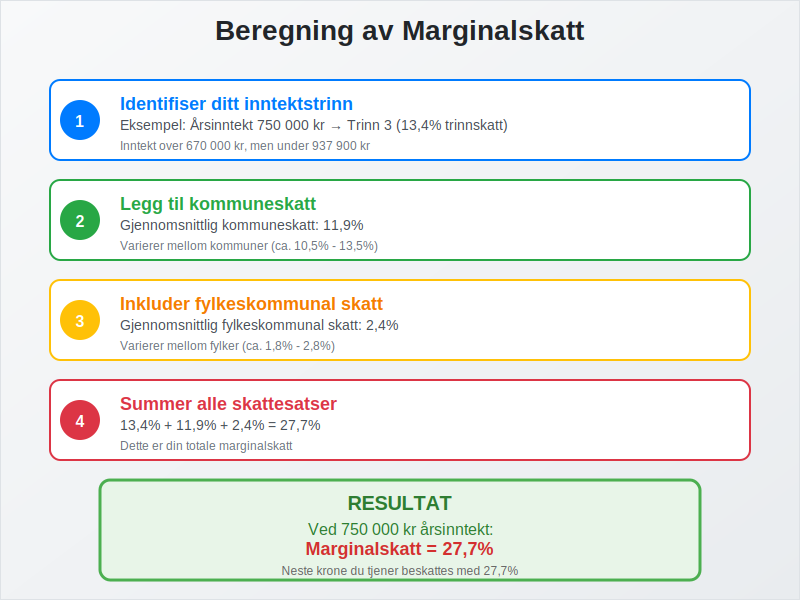
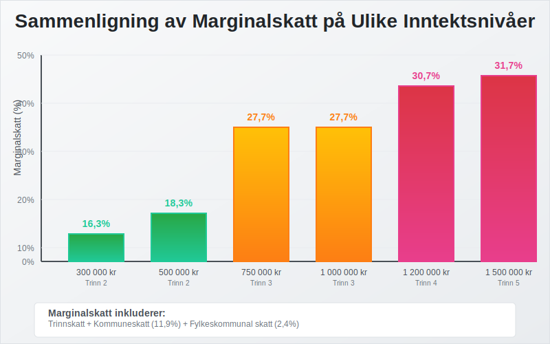
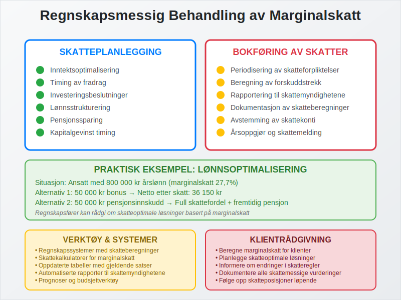
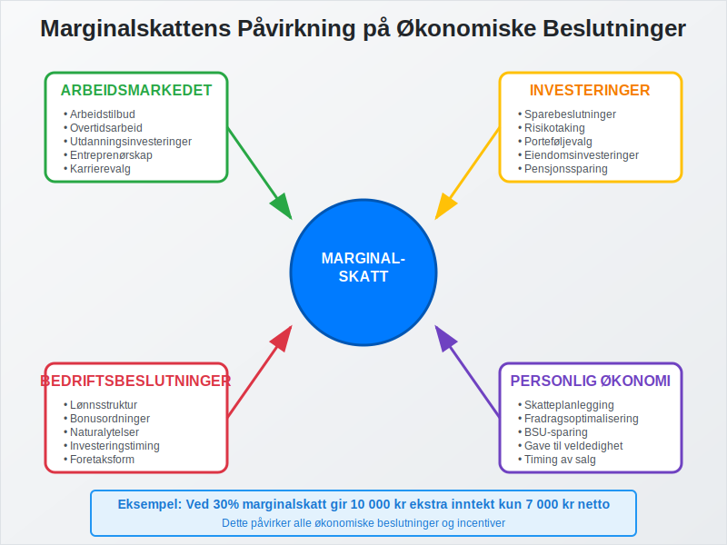
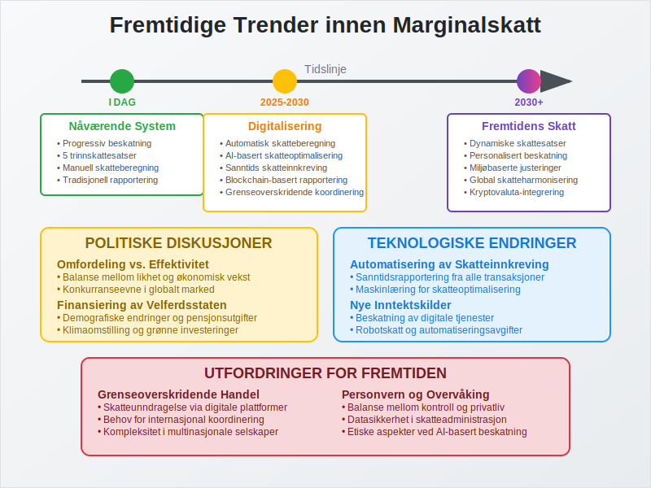
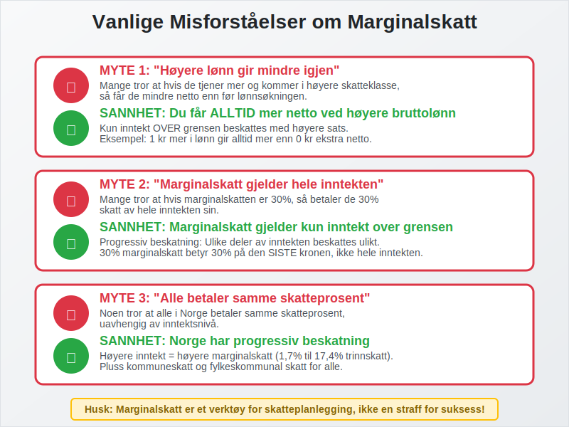

Marginalskatt er den skattesatsen som gjelder for den siste kronen du tjener i inntekt. Dette er et sentralt begrep innen regnskap og skatteplanlegging som påvirker både privatpersoner og bedrifter i Norge.
Se også vår artikkel om Toppskatt for mer om ekstra skattesatser på høye inntekter.
For en bredere oversikt over generelle skattesatser i Norge, se Skattesats.

Definisjon av Marginalskatt
Marginalskatt refererer til den prosentandelen av den siste kronen du tjener som går til skatt. I Norge har vi et progressivt skattesystem, som betyr at skattesatsen øker med inntektsnivået.
Forskjell mellom Marginalskatt og Gjennomsnittsskatt
Det er viktig å skille mellom:
- Marginalskatt: Skattesatsen på den siste kronen du tjener
- Gjennomsnittsskatt: Total skatt delt på total inntekt
- Effektiv skattesats: Den faktiske skatteprosenten du betaler

Norges Skattesystem og Marginalskatt
Se også vår spesifikke artikkel om Trinnskatt for en detaljert gjennomgang.
Trinnvis Skattesystem
Norge opererer med et trinnvis skattesystem hvor ulike inntektsnivåer beskattes med forskjellige satser:
| Inntektstrinn | Skattesats | Gjelder for inntekt |
|---|---|---|
| Trinn 1 | 1,7% | 208 051 - 292 850 kr |
| Trinn 2 | 4,0% | 292 851 - 670 000 kr |
| Trinn 3 | 13,4% | 670 001 - 937 900 kr |
| Trinn 4 | 16,4% | 937 901 - 1 350 000 kr |
| Trinn 5 | 17,4% | Over 1 350 000 kr |
Satser for inntektsåret 2024
Beregning av Marginalskatt
For å beregne din marginalskatt må du:
- Identifisere hvilket inntektstrinn du befinner deg på
- Legge til kommuneskatt (gjennomsnitt 11,9%)
- Inkludere fylkeskommunal skatt (gjennomsnitt 2,4%)
- Vurdere andre skatter som arbeidsgiveravgift

Praktiske Eksempler på Marginalskatt
Eksempel 1: Lønnsmottaker med 500 000 kr i årsinntekt
For en person med 500 000 kr i årsinntekt:
- Kommuneskatt: 11,9% av hele inntekten
- Fylkeskommunal skatt: 2,4% av hele inntekten
- Trinnskatt: 4,0% (trinn 2) på inntekt over 292 850 kr
- Total marginalskatt: Cirka 18,3%
Eksempel 2: Høyinntektstaker med 1 000 000 kr
For en person med 1 000 000 kr i årsinntekt:
- Kommuneskatt: 11,9%
- Fylkeskommunal skatt: 2,4%
- Trinnskatt: 13,4% (trinn 3)
- Total marginalskatt: Cirka 27,7%

Marginalskatt for Bedrifter
Selskapsskatt
Aksjeselskaper og andre juridiske personer betaler flat selskapsskatt på 22%.
Personlige Foretak
Enkeltpersonforetak beskattes som personinntekt og følger samme marginalskattsystem som lønnsmottakere.
Regnskapsmessige Konsekvenser
Skatteplanlegging
Forståelse av marginalskatt er viktig for:
- Inntektsoptimalisering: Timing av inntekter og fradrag
- Investeringsbeslutninger: Vurdering av avkastning etter skatt
- Lønnsstrukturering: Optimalisering av lønn og naturalytelser
Bokføring av Skatter
I regnskapet må bedrifter:
- Periodisere skatteforpliktelser
- Beregne forskuddstrekk
- Rapportere korrekt til skattemyndighetene

Strategier for Marginalskattoptimalisering
For Privatpersoner
- Pensjonssparing: Reduserer skattbar inntekt
- BSU-sparing: Skattefradrag på innskudd
- Gave til veldedighet: Fradragsberettiget
- Timing av salg: Optimalisering av kapitalgevinst
For Bedrifter
- Investeringer: Skattemessige avskrivninger
- Kostnadsføring: Timing av kostnader
- Strukturering: Valg av foretaksform
Marginalskatt og Økonomiske Beslutninger
Arbeidsmarkedet
Høy marginalskatt kan påvirke:
- Arbeidstilbud: Insentiver til å arbeide mer eller mindre
- Utdanning: Investeringer i kompetanse
- Entreprenørskap: Motivasjon for å starte egen virksomhet
Investeringer
Marginalskatt påvirker:
- Sparebeslutninger: Avkastning etter skatt
- Risikotaking: Skattemessig behandling av tap og gevinst
- Porteføljevalg: Skatteeffektive investeringer

Internasjonale Sammenligninger
Nordiske Land
| Land | Høyeste marginalskatt | Terskel |
|---|---|---|
| Norge | ~47% | Høye inntekter |
| Sverige | ~57% | Høye inntekter |
| Danmark | ~56% | Høye inntekter |
| Finland | ~51% | Høye inntekter |
Konkurranseevne
Norges marginalskattnivå påvirker:
- Talentmobilitet: Tiltrekking av høyt kvalifisert arbeidskraft
- Investeringsklima: Bedrifters lokaliseringsbeslutninger
- Innovasjon: Insentiver for forskning og utvikling
Fremtidige Endringer og Reformer
Politiske Diskusjoner
Marginalskatt er ofte tema i politiske debatter om:
- Omfordeling: Balanse mellom likhet og effektivitet
- Vekst: Skattenivåets påvirkning på økonomisk aktivitet
- Velferd: Finansiering av offentlige tjenester
Teknologiske Endringer
Digitalisering påvirker:
- Skatteinnkreving: Automatisering og kontroll
- Nye inntektskilder: Beskatning av digitale tjenester
- Grenseoverskridende handel: Utfordringer for skattesystemet

Praktiske Råd for Regnskapsførere
Klientrådgivning
Som regnskapsfører bør du:
- Beregne marginalskatt for klienter
- Planlegge skatteoptimale løsninger
- Informere om endringer i skatteregler
- Dokumentere alle skattemessige vurderinger
Verktøy og Systemer
Bruk av:
- Regnskapssystemer med skatteberegninger
- Skattekalkulatorer for marginalskattberegning
- Oppdaterte tabeller med gjeldende satser
- Automatiserte rapporter til skattemyndighetene
Vanlige Misforståelser
Myte 1: “Høyere lønn gir mindre igjen”
Sannhet: Du får alltid mer netto ved høyere bruttolønn, selv med høyere marginalskatt.
Myte 2: “Marginalskatt gjelder hele inntekten”
Sannhet: Marginalskatt gjelder kun inntekt over grensen for hvert trinn.
Myte 3: “Alle betaler samme skatteprosent”
Sannhet: Norge har progressiv beskatning med økende satser.

Konklusjon
Marginalskatt er et fundamentalt konsept i norsk skatterett som påvirker både privatpersoner og bedrifter. Forståelse av marginalskatt er essensielt for:
- Skatteplanlegging og optimalisering
- Økonomiske beslutninger og investeringer
- Regnskapsmessig behandling av skatter
- Strategisk rådgivning til klienter
Som regnskapsfører er det viktig å holde seg oppdatert på endringer i skattesatsene og hjelpe klienter med å forstå hvordan marginalskatt påvirker deres økonomi.
Ved å mestre marginalskattberegninger kan du gi verdifull rådgivning som optimaliserer klientenes skatteposisjon innenfor gjeldende regelverk.